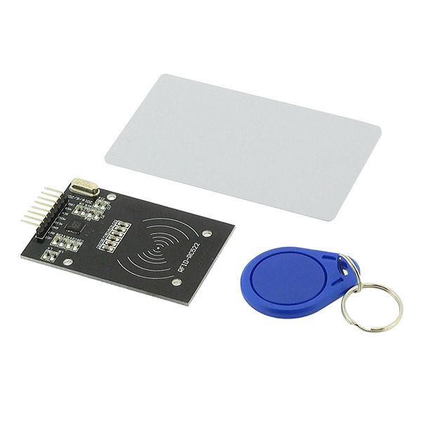

This is the very first project I independently undertook. The goal was to utilize an RFID sensor and an Arduino board to read data from a card
and verify its authenticity in order to open a door.
For this project, I learned how to connect the RFID sensor to the Arduino and program the microcontroller to interact with the sensor and process the read data.
I also implemented a verification system to determine if the card's information matched any pre-established list of authorized cards. If the card was recognized,
the system would activate a mechanism to open the door.
This project allowed me to acquire technical skills in electronics and programming. I learned how to manipulate hardware components,
understand the specifications of the RFID sensor, and utilize the appropriate software libraries to interface with it.
I deepened my knowledge of Arduino programming, using conditional structures to verify the card data and implementing actions based on the obtained result.
Completing this project provided valuable hands-on experience and helped me grasp the fundamental principles of interaction between RFID sensors and microcontrollers.
It also laid a solid foundation for tackling more complex projects in the fields of automation and security.
This initial personal project was an enriching experience that motivated me to further explore the vast realm of electronics and programming.
I look forward to continuing my learning journey and taking on new challenges with future projects.